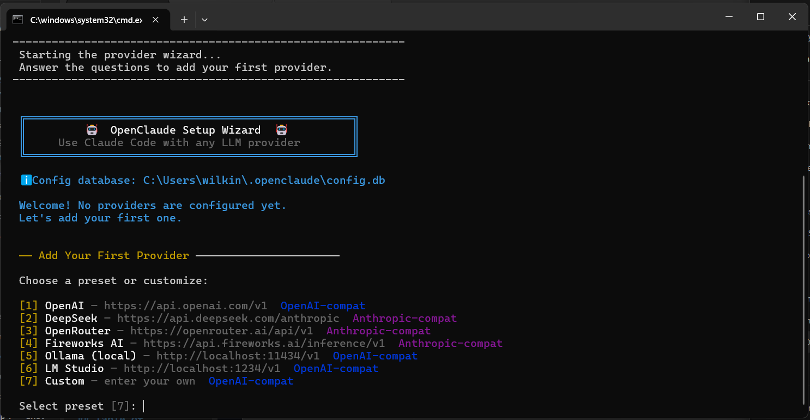
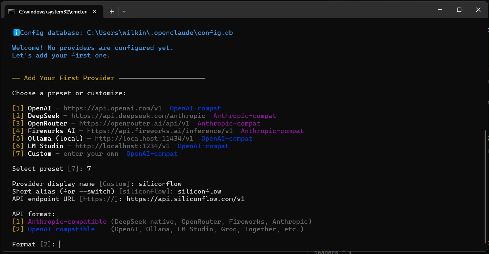
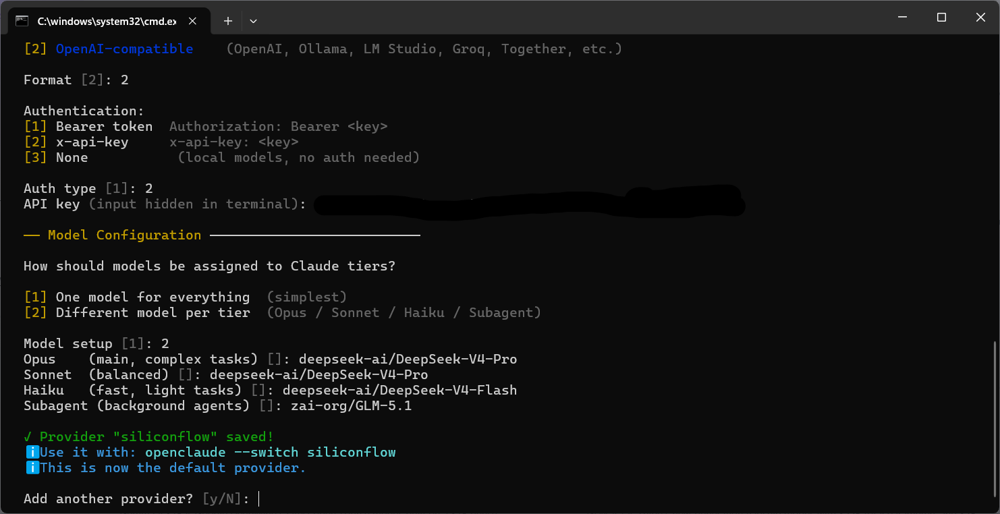
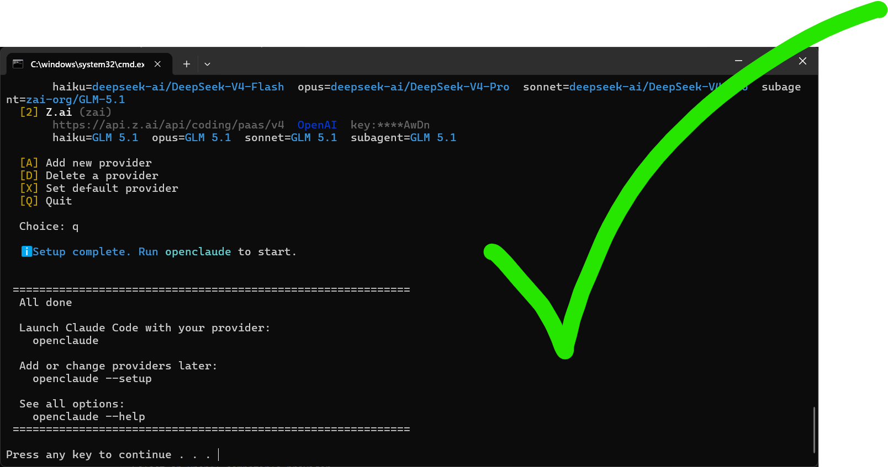
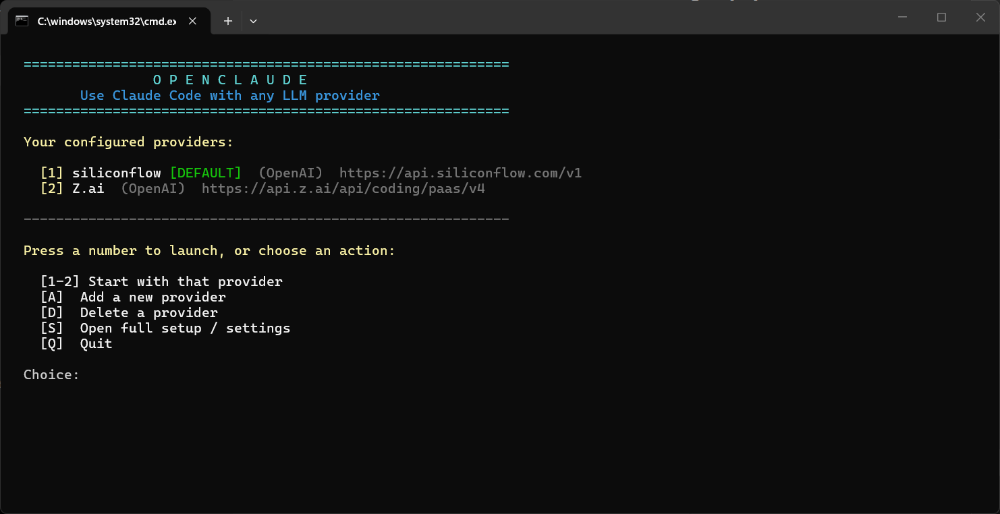

An intelligent local proxy that connects Claude Code to OpenAI, DeepSeek, Ollama, Groq, SiliconFlow, or any compatible AI provider. Beautiful guided setup — no technical knowledge required.
OpenClaude sits invisibly between Claude Code and your chosen AI provider, translating API formats in real time.
Claude Code always thinks it's talking to Anthropic. The switch is completely transparent.
OpenClaude is intentionally minimal. No bloat, no dependencies, just powerful provider switching.





Copy these values directly into the setup wizard.
| Provider | Endpoint URL | API Format | Auth | Cost |
|---|---|---|---|---|
| OpenAI | https://api.openai.com/v1 | OpenAI-compat | Bearer | Paid |
| Anthropic | https://api.anthropic.com | Anthropic-compat | x-api-key | Paid |
| DeepSeek | https://api.deepseek.com/anthropic | Anthropic-compat | x-api-key | Very cheap |
| OpenRouter | https://openrouter.ai/api/v1 | Anthropic-compat | Bearer | Free tier |
| SiliconFlow | https://api.siliconflow.com/v1 | OpenAI-compat | Bearer | Very cheap |
| Groq | https://api.groq.com/openai/v1 | OpenAI-compat | Bearer | Free tier |
| Fireworks AI | https://api.fireworks.ai/inference/v1 | Anthropic-compat | Bearer | Paid |
| Together AI | https://api.together.xyz/v1 | OpenAI-compat | Bearer | Paid |
| Mistral AI | https://api.mistral.ai/v1 | OpenAI-compat | Bearer | Paid |
| Perplexity | https://api.perplexity.ai | OpenAI-compat | Bearer | Paid |
| Ollama (local) | http://localhost:11434/v1 | OpenAI-compat | None | Free forever |
| LM Studio (local) | http://localhost:1234/v1 | OpenAI-compat | None | Free forever |
Don't see your provider? Any provider with a /v1/chat/completions or /v1/messages endpoint will work.
See the Troubleshooting Guide for details.
You need Node.js 22+ and Claude Code installed first.
~/.openclaude/config.db on your own computer. OpenClaude only sends it to the provider you configured — the same place you'd send it anyway. It's never transmitted to any third party, server, or analytics system.
/v1/chat/completions) or the Anthropic Messages format (/v1/messages) will work. This covers virtually every major provider and most self-hosted options.
openclaude --switch <alias> — even while Claude Code is running. The switch is instant, no restart needed.
git pull from the OpenClaude folder. Your config is stored separately in ~/.openclaude/config.db and won't be affected by updates.